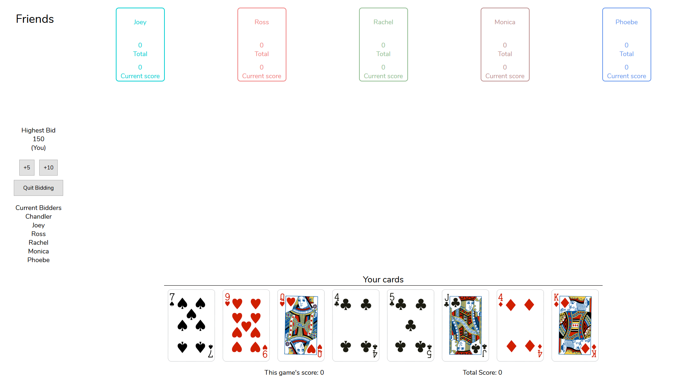
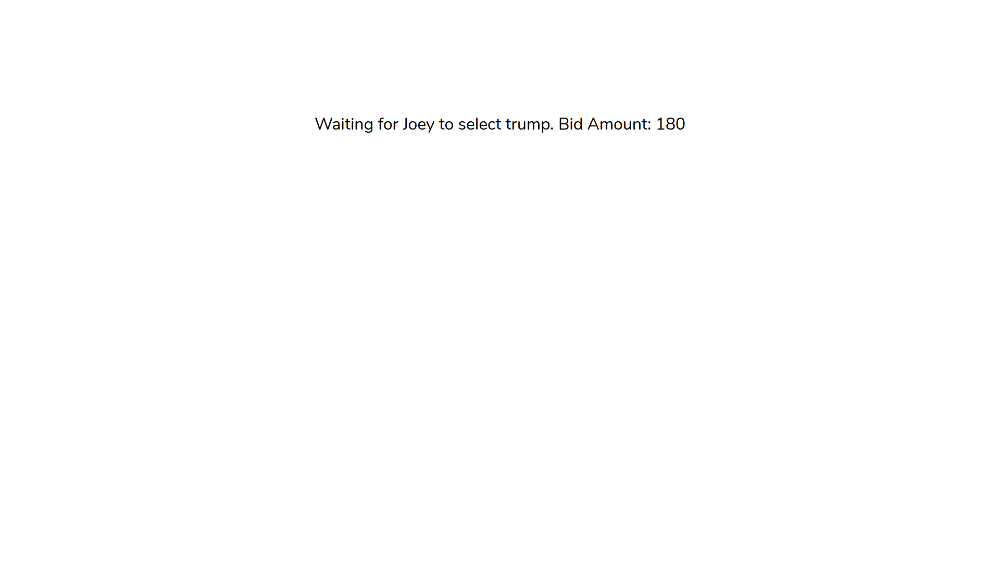
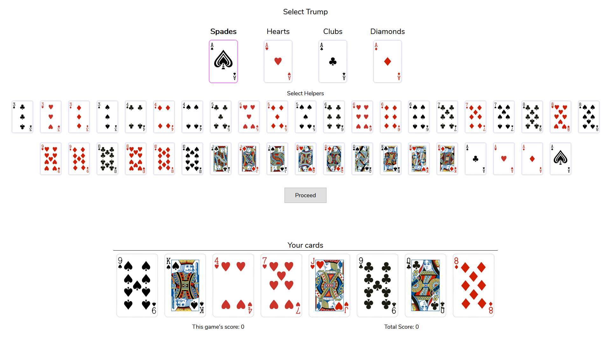
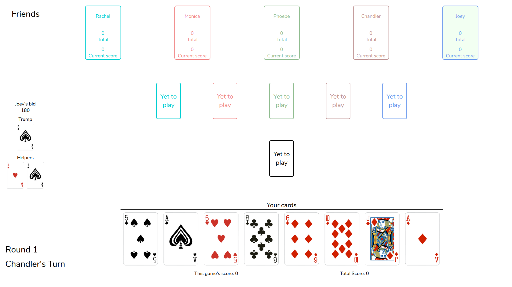
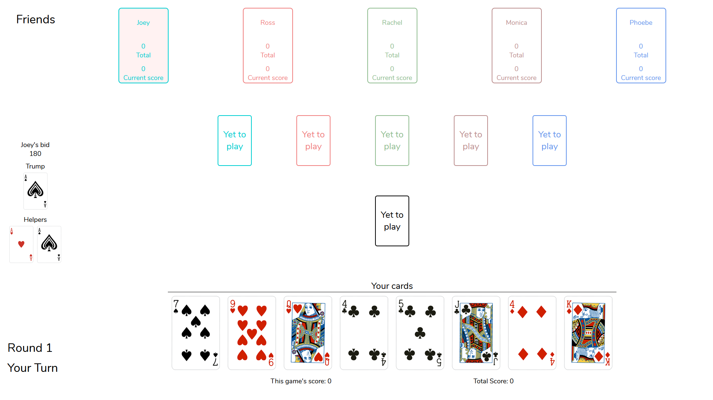
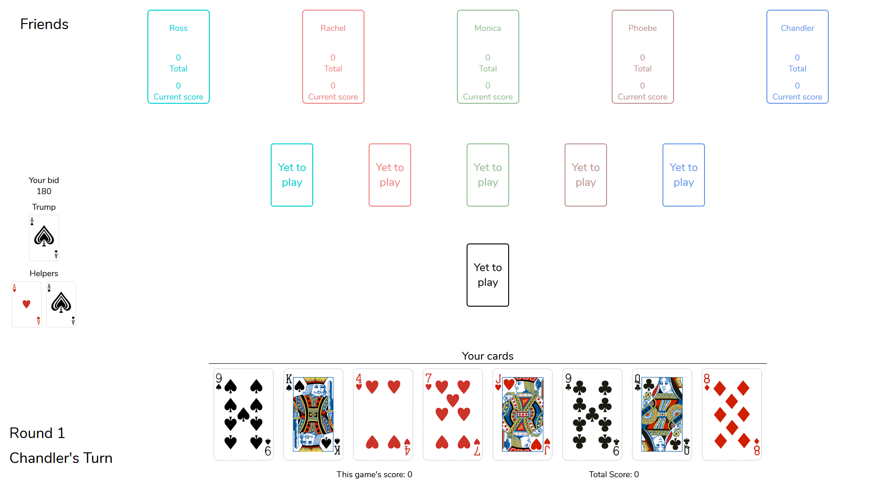

250 is a 6-player card game. That's right, you need 6 players to play this game.
I will try to explain the game, and how to use the website side by side in the following sections.
How to join a game?
Make sure you have 6 players before you begin. The game can only start when all 6 players have connected. When you open the website you should see the following image:

An important thing to remember is that you can't leave any of the above details empty.
I'm stuck at the waiting screen. What do I do?
No need to panic, my law abiding friend. You must be seeing some variation of the following screen:

You are being shown the players who have joined the same group as you. As soon as 6 players join, you'll be redirected to the bidding screen.
That's okay, but what is the game about?
You ask all the right questions, my overly inquisitive friend. As mentioned before, this is a 6 player game.
A deck has 52 cards, but they can't be divided evenly among 6 players. So we exclude all the twos from the deck. This leaves us with 48 cards, which means that each player gets 8 cards (48/6 = 8).
Before we go further, we need to cover some concepts. You might be already familiar with them. In that case, feel free to skip them.
Why is the game called 250?
My friend, your curiosity knows no bounds! This game is called 250, because 250 is the maximum number of points that you can win in a single game.
How are the points calculated?
Before we discuss the point scheme, we need to know which card is bigger. In this game, Ace is the biggest card, followed by King, Queen, Jack and so on, until 3.
| Card | Suit | Points |
|---|---|---|
| Ace | Any | 10 |
| King | Any | 10 |
| Queen | Any | 10 |
| Jack | Any | 10 |
| Ten | Any | 10 |
| Five | Any | 5 |
| Three | Spade | 30 |
The total score becomes:
=> 10x4 (Aces) + 10x4 (Kings) + 10x4 (Queens) + 10x4 (Jacks) + 10x4 (Tens) + 5x4 (Fives) + 30(Three of Spades)
=> 40 + 40 + 40 + 40 + 40 + 20 + 30
=> 250
How do I win points?
Your abitity to ask awesome questions will surely take you places, my friend!
This game uses a concept called hands. One hand consists of 6 cards, one from each player. One game of 250 contains 8 hands. A hand is also called a round.
In any hand, a winner is determined. One by one, each player plays a card.
You can only play the suit that is already being played. If you are playing the first card, then you can play any suit.
The player with the highest card wins the hand, and they get the score of all the cards in that hand.
The winner plays the first card in the next hand.
Let's take an example. Suppose all 6 players have played their cards, and they are as follows:
The player with Ace wins the hand. This hand contains 35 points.
But I don't have a card of the same suit. What now?
Your reasoning skills leave me in awe, dear friend!
Somebody played Four of Spades. Now its your turn, but you don't have any Spades card!!
This puts you in a very special position, my friend. You can play any card now, including any card from the TRUMP suit.
What is Trump?
Trump refers to the a suit, which is given special status for one game.
It is decided by the winner of the bidding system. Before we jump into the bidding system, let us first understand the Trump suit:
Ok, what is the bidding system?
You have a good eye for observation, my friend!
Bidding is one of the 2 most important parts of this game.
In the beginning of every game, we have a bidding round. Every player can bid, and quit bidding whenever they feel like doing so.
Once you quit bidding, you cannot bid anymore. The player with the highest bid wins the bidding round. Bids can range from 150 to 250, both inclusive.
Bids must be a multiple of 5. Why, you ask? It is just not possible to collect 153 points, is it?
Here is a look at the bidding screen, you can see the following things in this screen:
What happens when someone wins the bidding round?
As always, your question is on point, my friend!
When all players have Quit the bidding process, the player with the highest bid is declared the bidding winner. You will see the following screen when this happens. Remember, everyone has to click Quit Bidding before you can see this screen.
5 players will see the above screen. The bidding winner will see a different screen, however.
As you can see, the bidding winner sees 3 different things:
Wait a sec. I though the bidding winner selected the trump suit. Why do you show so many other cards?
My friend, my dear friend, if only you knew the beauty of your questions!
This brings us to the second most important part of the game. The bidding winner also selects at most 2 helpers.
What is a helper?
Ah, you see this part can be a little bit tricky. Let's take an example:
If you look closely, you'll observe that Ace of Hearts and Ace of Spades have been selected.
The players who have Ace of Hearts and Ace of Spades are now a part of the bidding team.
Bidding Team? What is this?
My friend, 250 is a team game. There are two teams who compete to win each game.
But, I don't know who has the Ace of Hearts???
That is the beauty of the game, my friend!
Even the bidding winner does not know their allies or enemies. They get revealed as the game progresses.
If you have a Helper card, then you know at least one ally - the bidding winner. In the following image, you can see the Bidding winner has been colored as green. Why? Because this player has the Ace of Spades.
If you don't have any Helper card, then you know at least one enemy - the bidding winner. In the following image, the bidding winner has been colored as red, since this player does not have any helper cards. They belong to the Anti team.
As you can see below, the bidding winner does not know any ally or enemy.
In the image above, the area in the middle is called the Play Area. It gets filled with cards when people start playing.
But but, who wins the game?
Aha, I see that you are still as curious as ever, my friend!
Remember the points scheme that we discussed?
Bidding Team score is calculated as the sum of scores of the bidding winner and the helpers.
Anti Team score is calculated as the sum of scores of everyone else.
If the bidding team reaches their bid, or exceeds it, they win!! In such a scenario, everyone in the bidding team is awarded points equal to their bid, while the Anti Team gets zero.
What about the Anti Team?
Did not get selected in the bidding team? Not to worry, my friend!
Anti Team wins if the bidding team scores less than their bid. In such a scenario, everyone in the Anti team is awarded points equal to their combined score, while the Bidding Team gets zero.
Moreover, if the Anti Team scores more than 100, they get awarded points equal to the Bidding Team's bid, while the bidding team still gets zero.
TLDR, or Conclusion
My not so curious friend (in case you did not read the entire explanation), 250 is a team game.
The team structure reveals itself during the course of the game. You do not know in the beginning who belongs to which team.
There is a bidding round, and the bidding winner selects a trump suit and 2 helpers.
The bidding winner and helpers constitute the bidding team.
Everyone else forms the anti team.
Bidding team reaches/exceeds their bid, they win!
Anti Team wins when bidding team fails.